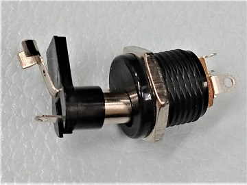

エフェクター電源はなぜセンターマイナス仕様なのか
2024年01月20日 カテゴリー：メモ・雑記
コンパクトエフェクターのDCジャックはチップ（センターピン）がマイナス、スリーブがプラスとなるセンターマイナスが主流となっています。この場合、通電状態だとプラグ外側のスリーブ（＋）が機器の金属ケース等のグラウンド（GND）部分に触れてショートが起こり、電源供給側が故障する等の危険性があります。なぜこのような難点があるのにセンターマイナスが採用され続けているのか考えてみます。
【センタープラスは不可能なのか】
上図はセンターマイナス仕様で電池を併用する場合の一般的な配線です。モノラルフォンプラグを入力ジャックに挿入した時、入力ジャックのリング（電池のマイナス）とスリーブ（GND）が繋がって電源オンになります。DCプラグ挿入時は、DCジャックの2番ピンと3番ピンの接点が離れることにより電池と外部電源が切り替わります。図の右側は、DCジャックを介して電源供給した場合に、常に（入力ジャックにプラグが無くても）電源オンになるパターンです。
入力ジャックが電源スイッチになっているとセンタープラスが無理なのではないかという考えが出てきますが、下図の配線であれば問題ありません。ただ、電池駆動のみのエフェクターにDCジャックを増設する場合、センターマイナスの方が配線の入れ替えが簡単だという事情はあったかもしれません。
【BOSSの影響】
センタープラスの配線はそこまで込み入っているわけではなく、センタープラスを採用するメーカーがあっても不思議ではありません。そこで影響力が大きかったのが、大手エフェクターブランドのBOSSでしょう。BOSSがセンターマイナスを採用したため、それが標準として広まったのではないかと思います。ではなぜBOSSでセンターマイナスが採用されたのでしょうか。
- センターマイナスの機器が多かった
通常の電子機器では電源のプラス側にスイッチがあります*1。プラス側で電池と外部電源を切り替えるとなると、DCジャックは必然的にセンターマイナスにする必要が出てきます（実際1990年頃まではセンターマイナスのACアダプターが多かったらしい）。しかし、エフェクターではすでに電池のマイナス側を電源スイッチにしています。また、DCプラグの抜き差し頻度が高めで、周りには金属ケース等のショートする要因（GND）があふれているので、他の機器とは状況が違うように思います。
*1 電気工事士技能試験では、感電等の事故防止のため非接地側（＋）にスイッチを入れることとされています。ただしエフェクターのような低電圧の小型機器では、電源マイナス側のスイッチでもよいことが多いと思います。
- 接触不良対策
DCジャック・プラグの構造上、スリーブ側よりチップ側の方が接触不良が起きやすいです*2。非絶縁型のパワーサプライや分岐DCケーブルで複数のエフェクターを接続している場合、シールドケーブルとDCケーブルでGNDが繋がるため、チップ（GND）の接触不良時に電源供給が途絶えないという利点があります。特にバッファードバイパスだとバイパス時も電源が必要なため、電源は死活問題です。
*2 チップ側の接触が安定するよう工夫されたフォークタイプのプラグがあります。
- センタープラスでは電池と衝突する（Nana's Effectorさんからご指摘いただきました。）
下図はDCジャックの内部構造で、プラグを挿入する時はチップが最初に接触します。抜き差しする時、チップだけが接続される瞬間があるということになります。（マル信無線 MJ-10 データシートより抜粋、改変）
また、下写真のようにプラグが外れかかっていると、チップだけが繋がっている状態（半挿し）になります。

この状態を踏まえて、センタープラスのエフェクター2台に外部電源を分岐させて接続する場合を以下に示します。
GNDはシールドケーブル、DCケーブルによって全て接続されています。下側のエフェクターにDCプラグを挿入する途中（もしくは半挿し状態の時）、外部電源のプラスと電池のプラスが繋がっている状態になり、電池や外部電源に悪影響を及ぼします。このような状況を想定してセンタープラスが採用されなかった可能性が考えられます。
結局のところ真実はどうなのかはわかりませんが、今後もセンタープラスが採用されることはなさそうです。DCプラグの抜き差しをする時は、ショート事故防止のため必ず外部電源をオフにしておくように習慣づける必要があるかなと思います。